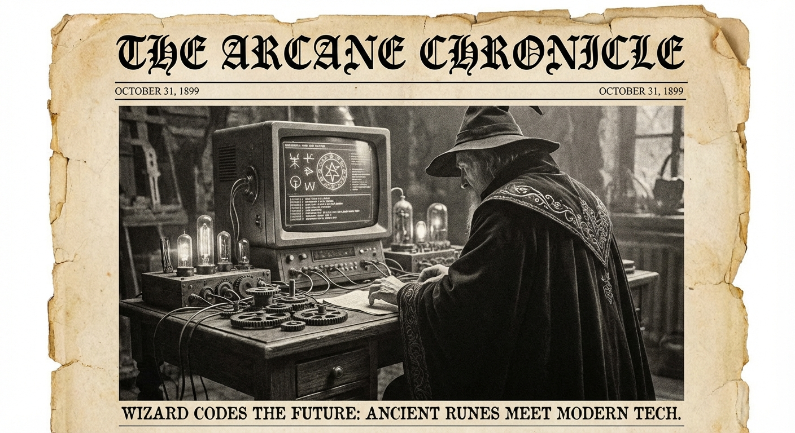

Morning Edition
6:00 AM CSTWorld & Geopolitics
Trump Threatens All Iranian Power Plants, Bridges
President Donald Trump has expanded his threat against Iran to include all power plants and bridges as his Tuesday ultimatum approaches. The Iran conflict continues into Day 37+ with intensified strikes.
— Source: AP News, US News, April 6US Rescues Downed Air Force Officer Inside Iran
American commandos carried out a daring mission to extract an injured crew member from a downed F-15E fighter jet inside Iran. Trump called it "one of the most daring rescues in history."
— Source: USA Today, April 4-5Markets & Finance
Stocks End Mixed Amid Iran Tensions
Stocks ended slightly higher Monday with S&P 500 up 0.06%, Nasdaq +0.36%, Dow -0.1%. Investors weigh ongoing Iran conflict and inflation concerns.
— Source: 247 Wall St, Investopedia, April 6Oil Surges on Supply Disruption Fears
Oil prices climbed sharply as traders fear supply disruptions from the Iran conflict. Brent crude trading near $110/barrel.
— Source: Trading Economics, April 7Gold Remains Elevated
Gold continues trading near all-time highs as safe-haven demand persists amid geopolitical uncertainty.
— Source: LiteFinance, April 7
The Tuesday Visionary: Clarity Amidst Chaos.
"Sagittarius, the Archer faces a pivotal Tuesday! The Iran conflict rages into Day 37+ with Trump's ultimatum ticking closer—yet your resilient spirit sees opportunity where others see chaos. The S&P wobbled slightly while Nasdaq climbed 0.36%. That's the Sagittarius way: find the horizon even in turmoil. Your Year of the Rat cunning serves you well. Oil surges toward $110 but your strategic vision cuts through the noise. The cosmos says: bold moves bring rewards. Your lucky numbers: 3, 7, 19. Your lucky color: Royal Purple. Code boldly, dream wildly, and may your Tuesday be productive!"— Tuesday's Developer Chronicle
Sagittarius Horoscope
Happy Tuesday, brave Archer! Your Sagittarius + Rat energy powers through the week. The Iran conflict (Day 37+) creates market volatility—but the Nasdaq still gained 0.36% and oil nears $110. Your natural optimism turns uncertainty into opportunity. The Pentagon shakeup and Trump's ultimatum prove: courage wins. Trust your intuition; it's your greatest gift. Big picture thinking serves you well now. The stars say: bold moves pay off this week. Your lucky numbers: 3, 7, 19. Your lucky color: Royal Purple. Make it a great Tuesday, Sagittarius!
— Source: Cafe Astrology, Horoscope-Day, April 7, 2026Tech & AI Highlights
-
OpenAI Executive Shakeup
OpenAI's executive bench collapses ahead of its IPO, marking a critical transition period.
-
AI Agent Hacks FreeBSD in 4 Hours
An AI agent successfully hacked FreeBSD in just four hours, showcasing both capability and security risks.
-
DeepSeek V4 on Huawei Chips
DeepSeek V4 will run on Huawei chips, signaling a shift in AI hardware partnerships.
-
Anthropic Acquires Biotech Startup for $400M
Anthropic expands into biotech with a $400M acquisition, diversifying beyond AI.
-
GPT-5 Series Updates
OpenAI continues innovating with GPT-5 series, pushing reasoning and coding benchmarks.
-
Crypto Volatility Continues
April 2026: DeFi, AI tokens seeing high volatility. Bitcoin down -46% from ATH.
Active Reminders
- Build Oomi iOS and Android app
- Plaid Integration Research
- Connect Nemu to Notion
- Research VPN/proxy services
- Create security OpenClaw bot